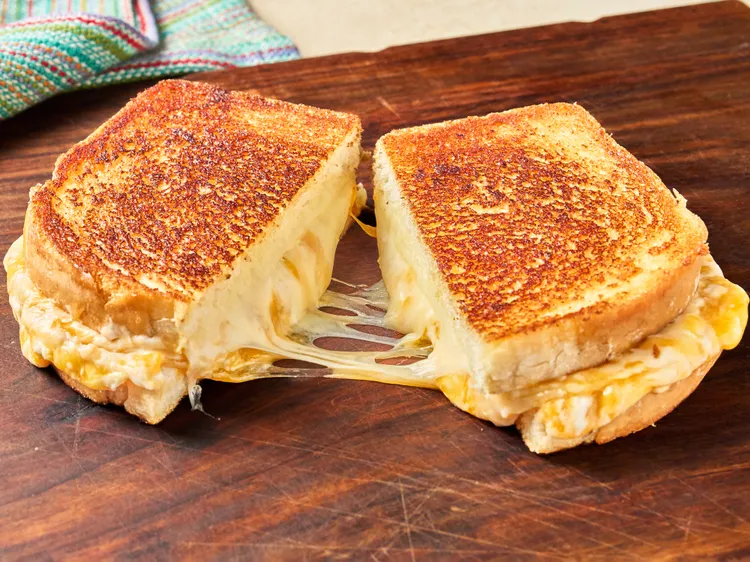

Copycat Disneyland Grilled Cheese

Description
For this copycat Disneyland grilled cheese, provolone and Cheddar slices encase a Cheddar and cream cheese spread in hearty white bread. A garlic-mayonnaise smear on the outside is the secret to grilled perfection.
Ingrediants
- 4 ounces cream cheese, softened
- 2/3 cup shredded sharp Cheddar cheese
- 1 1/2 tablespoons heavy cream
- 1/2 teaspoon kosher salt, divided
- 1/2 cup mayonnaise
- 2 cloves garlic, finely minced
- 8 slices hearty white bread
- 8 slices sharp Cheddar cheese
- 8 slices provolone cheese
Steps
- Stir cream cheese, shredded cheese, heavy cream, and 1/4 teaspoon salt together in a small bowl until well combined; set aside.
- Stir mayonnaise, garlic, and remaining salt together in a separate bowl; set aside.
- Place 2 slices Cheddar cheese on each of 4 pieces of bread. Spread cream cheese mixture evenly among the 4 Cheddar-topped slices; top each with 2 slices provolone cheese. Add remaining bread slices on top.
- Spread half of mayonnaise mixture evenly over tops of sandwiches.
- Heat a large nonstick skillet over medium heat. Place sandwiches in skillet, mayonnaise side down. Spread the top of each sandwich with remaining mayonnaise mixture.
- Cook sandwiches until golden brown on both sides, flipping occasionally until cheese is melted and bread is well toasted.
Home